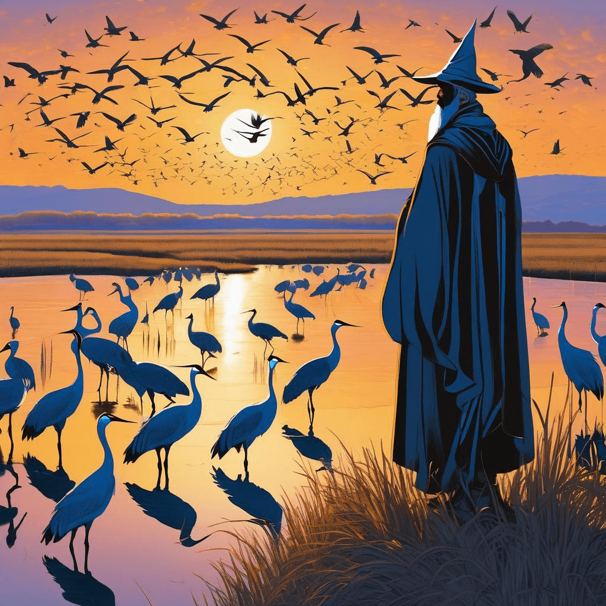
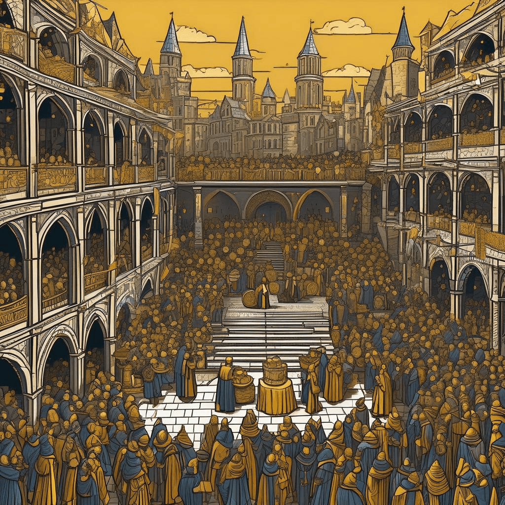

Chronicle Entry
March 11, 2026
Upon this Eleventh Day of March in the Year Two Thousand and Twenty-Six, Grand Magus Alistair doth observe celestial wonders both near and far! Whilst the northern borderlands of Nebraska witness the great migration of half a million sandhill cranes gathering upon the Platte River - a spectacle worthy of pilgrimage for any true naturalist - I remind all hunters in our blessed Kingdom of Dakota that the cunning coyote remains fair quarry throughout our realm, requiring not even a scroll of permission from the bureaucrats. Yet mark well, my brothers and sisters of the field! The deadline approacheth in early April for securing thy parchments for the grand autumn hunts of deer, elk, and the noble pronghorn. Submit thy applications post-haste through the Guild of Fish and Parks, lest ye be left watching from the sidelines whilst others claim glory!
In the realm of mystical tokens, the great Bitcoin hath climbed to seventy thousand six hundred and five pieces of gold, proving once more that freedom from the central banking wizards doth yield prosperity for those with wisdom and courage. Meanwhile, the tech conjurers struggle mightily with temporal magic - one brave soul hath spent nine full years attempting to repair the very fabric of time itself within the JavaScript scrolls, a quest that would make even this Grand Magus weary!

✨ Crane Migration Pilgrimage
Most troubling news arrives from the Twin Cities to our east, where Minneapolis officials debate arcane housing edicts whilst their citizens flee from public wagon-ways in ever-increasing numbers. This is what befalls kingdoms that burden their merchants and restrict the freedoms of property holders! Meanwhile, the bureaucratic sorcerers speak of forty million golden coins to rescue those who cannot pay tribute, whilst honest folk struggle with their own burdens.
✨ Javascript Time Magic Quest
As I have declared many times before, the path to prosperity lies not in the heavy hand of governance, but in the ancient wisdom of free markets, individual liberty, and respect for those who work the land and hunt the wilderness with honor!

✨ Bitcoin Golden Triumph